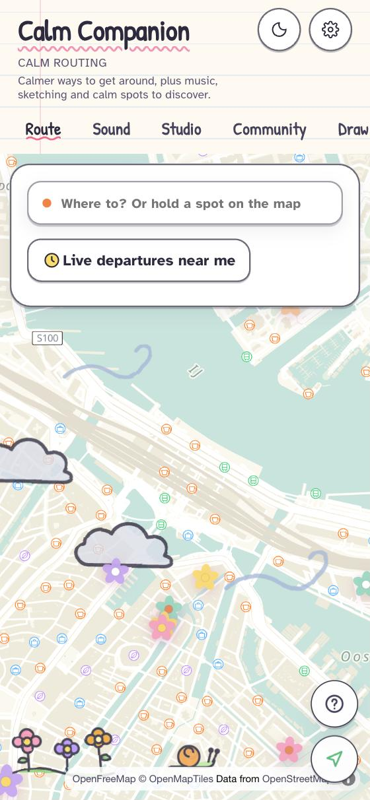
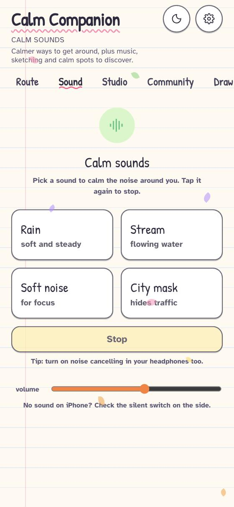
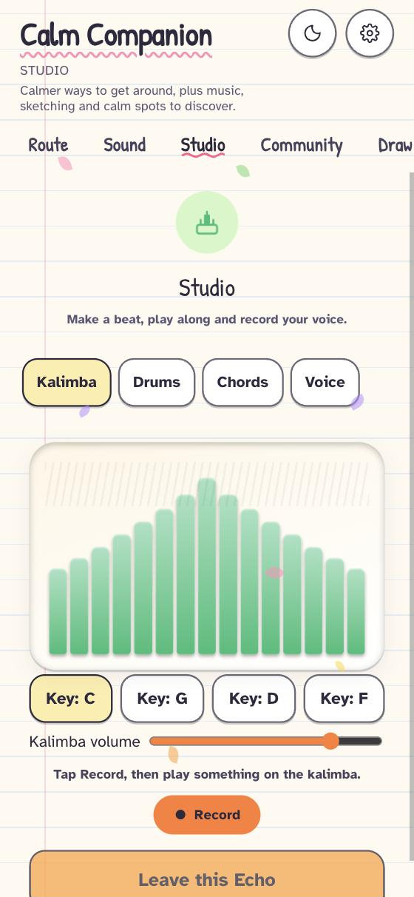
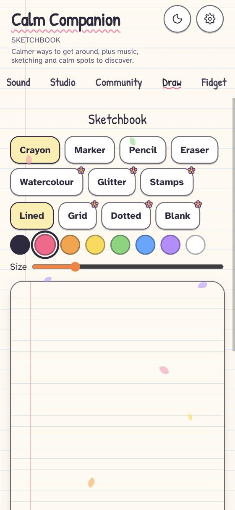
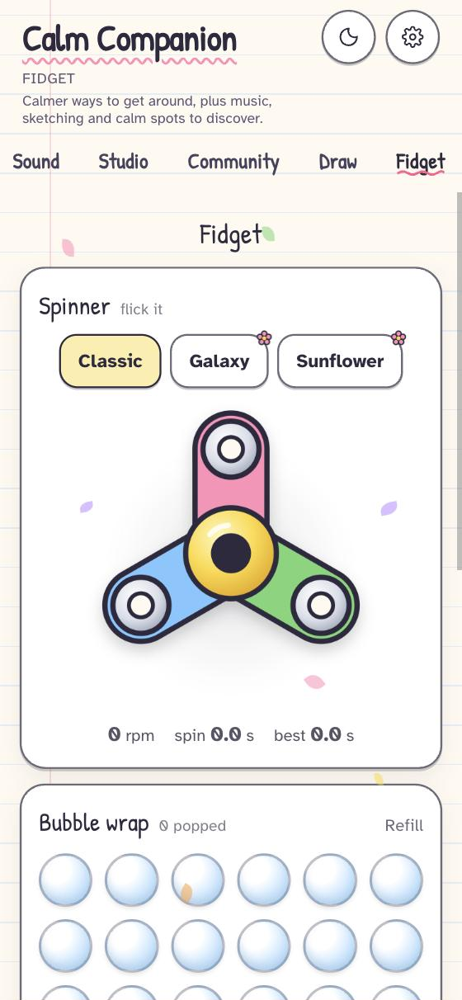

The calmest way, not the fastest.
Most maps take you along the busiest street because it saves two minutes. Calm Companion finds the way with less noise, fewer crowds and fewer crossings, and gives you calming sounds and little tools to use on the way.
Works in your browser. On iPhone or Android, add it to your Home Screen to use it like an app. No account needed. The App Store version is on its way.

The fastest route is often the loudest one.
Traffic, crowds, sirens and sudden sounds add up, and by the time you arrive you're already tired. Most of us work around it alone: learning the quiet streets, wearing headphones, avoiding certain hours. Navigation apps plan for speed. Calm Companion plans for calm.
Every route gets a calm score out of 10
You type where you're going. Calm Companion compares several routes and shows the calmest next to the fastest, so you can see what you'd be trading.
What goes into the score
The score comes from open map data: road type, speed, lanes, surface and crossings. When something is missing, it is left out and the rest is rebalanced. It is never guessed.
Walk, cycle or take transit, with live departures across Europe. A safety option leans towards lit, busier streets when you're walking alone.
Hand-drawn flowers on the map mark quiet places nearby, such as parks, libraries and small cafés. Tap one to see a photo and what it is.
For the moments in between
Everything is in the same app, so you don't need five. Sounds play alongside your own music, so Spotify or Apple Music can keep going.

Sounds
Rain, stream, soft noise and a city mask that takes the edge off traffic. Nothing sudden.

Studio
A kalimba, drums, chord pads and your voice with friendly effects. Make something small.

Sketchbook
Draw on lined paper or over a photo while you wait for the tram.

Fidget
A spinner, bubble wrap and clicky switches, with gentle haptics on your phone.
One companion, six parts
Route
- Calm score out of 10 on every route, next to the fastest one
- Walking, cycling and public transport
- Live departures and delays across Europe
- Leave now, leave at, or arrive by
- Gentle voice guidance that only recalculates when you really leave the route
- Safety option for walking alone
- Address search down to the house number, famous places first
- Place cards with a photo and what the place is
- Weather and day-and-night doodles drawn on the map
Sound
- Rain, stream, soft noise and city mask
- Plays alongside your own music
- Turns itself down while directions are spoken
- Sounds and music button right in the navigation bar
Studio
- Kalimba in four keys
- Drum machine and chord pads that stay on the beat
- Voice recording with friendly effects, also without headphones
- Echoes: leave a short melody on the map for others to find
- Songs on your profile
Draw
- Crayon, marker, pencil, watercolour, glitter and stamps
- Lined, grid, dotted or blank paper, or draw on a photo
- Pencil pressure on iPad
- Post a drawing to the map, or use it as your profile picture
Fidget
- Spinner with three designs
- Bubble wrap and clicky switches
- Haptics on your phone
- Scrolling locks while you play, so nothing jumps
Community
- Share calm spots, routes, events and drawings
- Up to four photos per post, pinned where they were taken
- Profiles with your own picture or a drawing
- Sign in with Face ID or Touch ID to keep your profile on a new phone
- Report, block and a 16+ age gate
Also: light, dark and automatic themes that follow the sun, a font designed for easy reading, and permission requests that explain why before they ask.
Quiet places, shared by people who know
Pin a calm spot, a route, an event or a drawing to the map. Add a photo, make a small profile with your own picture, and find what others left nearby.
Kept gentle
Every post and picture can be reported, and one report hides it straight away. You can block anyone. Text is filtered for links, contact details and slurs. You can delete your posts or your whole profile any time.
Built with respect for your data.
Yours to delete
Delete any post, or your whole profile and everything you shared, from the Community tab.
Location on your terms
It asks for your location only when you tap Find calm route, and tells you why first. Say no and you can type your start instead.
No account to start
Open it and use it. A profile is only for the community, with no password or email needed.
No subscriptions. Pay once for Calm+.
Calm routes, sounds, studio, sketchbook, fidget tools and the community (3 posts a day).
Calm+: extra brushes and papers, unlimited sketches, more spinner designs and a badge. No subscription, ever.
Support the maker. A tip unlocks nothing, it just says thanks.
Good to know
Is this a medical app?
No. Calm Companion is a navigation and wellbeing app. It helps you plan calmer journeys and gives you tools to unwind on the way.
Where does it work?
Routing, places and live departures work across Europe. The map is most detailed in big cities, and calm flowers can appear anywhere the map data supports them.
Do I need to install anything?
No. Open it in your browser. To use it like an app, add it to your Home Screen from your browser's share menu. An App Store version is being prepared.
Will it stop my own music?
No. By default the app's sounds play alongside Spotify or Apple Music. There's a setting if you'd rather it took over.
Can I suggest a calm place?
Yes. Share it in the Community tab, or send us a message on Instagram, and it can appear on the map for everyone.